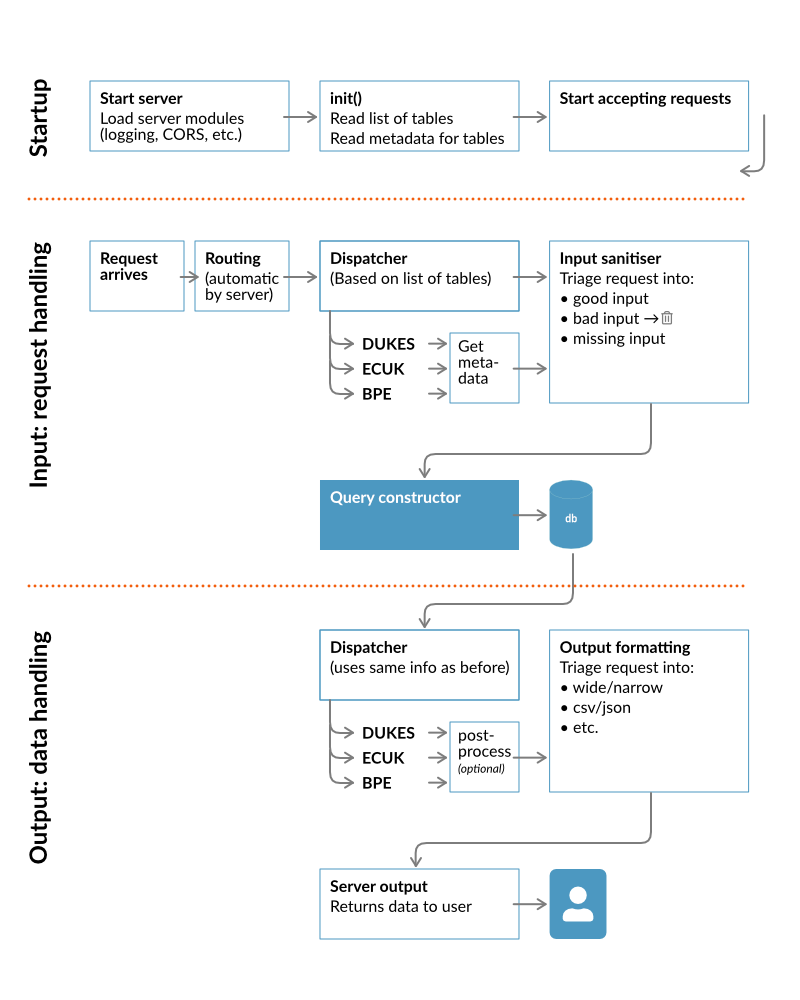
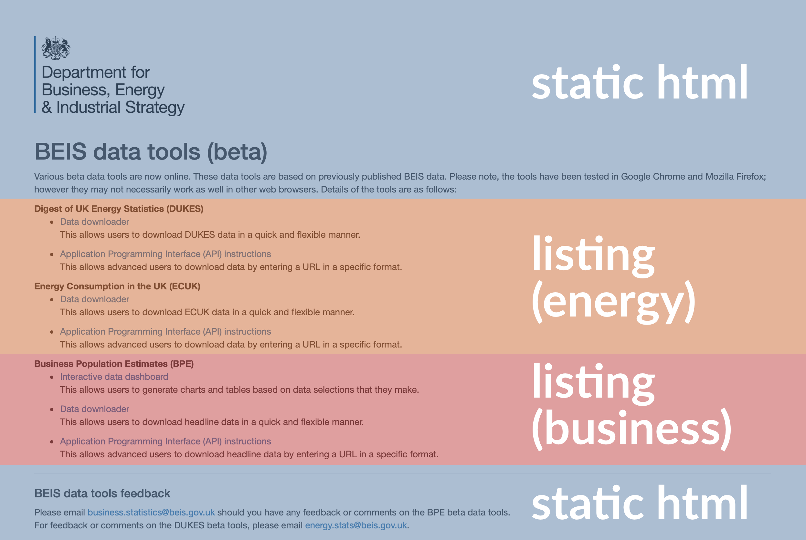
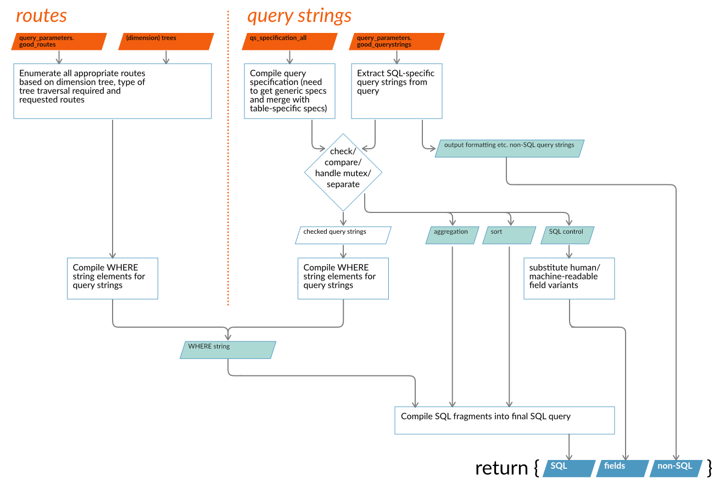

Basic Operation
The high-level flowchart shows the three distinct phases of operation:
- Initialisation - runs only once at startup and loads data into memory that will be required to handle each request
- Handling user input - sanitising and deciding what to do with it, including constructing the SQL query
- Handling the data - including querying the database and formatting the output data and sending to user
The core of the system is the module, called querify that constructs the SQL query based on the user input. This is described in a separate flowchart below.

Startup
Server Configuration
On startup, the API reads in data that is used for handling incoming requests. There are two main sources of this data:
- qs_specification_all.json configuration file
- the database (provides a list of all tables)
Query string specification (all)
This contains configuration settings for the system, SQL template information for each dataset and specifications for each query string to allow input sanitisation and security-checking.
It is made up of the following elements:
- static_html Detailed HTML fragments for constructing the home page of the site that is generated by the system.
- html Very simple/prescriptive HTML fragments for automatically generating a website based on a simple templating system included.
- sql SQL template information: fields to use (including derived or calculated fields); ordering and other details.
- generic Acceptable query strings and values or value-ranges; default/fallback values to use if omitted and necessary to include; indicators if multiple values are allowed or if parameter is optional; mutex data.
- [multiple] Acceptable query strings and values as per generic, named exactly as the database table they refer to.
Query string top-level
These are the basic elements, empty here, of the qs_specification_all.json file.
{
"static_html":{},
"html":{},
"sql":{},
"generic":{},
"energy_dukes":{},
"business_bpe":{}
}
HTML templates
There is a primitive templating system that generates content for the home page and landing pages. The elements in blue are static - that is, they are always going to look like that. The orange and red sections are dynamically generated: in this context that just means they reflect a potentially variable number of links, and the entire sections are independent of each other. This means the home page contains all sections, but the business landing page contains only links to business pages, and similarly for energy.

Static landing page html template
As the name suggests, this is not going to change much. Each tag contains a chunk of HTML which is strung together with other information by the API code.
For instance, between the page_header_1 and page_header_2 elements, the page title is inserted by the code, and so on.
The ga_script tag contains the Google Analytics tracker code that is inserted on the home page and is made available for other pages to also automatically insert. If the UA-id were to change, for instance, this is the place to edit that.
(Note: The content of the elements below have been shortened for readability)
"static_html":{
"page_header_1":"<!DOCTYPE html><html><head><title>",
"page_header_2":"</title></head>",
"body_start":"<body>...",
"logo_url":"/business/data/images/BEISlogo-portrait-colour.png",
"body_start2":"<div class=\"row\">",
"body_start3":"</div>",
"body_1":"<p>Various beta ... </p>",
"body_2":"<hr><h4>BEIS data tools feedback</h4><p>Please email... </p>",
"ga_script":"<script>(function(i,s,o,g,r,a,m){i['GoogleAnalyticsObject'];... </script>"
},
HTML listing
These apply to the main home page and the section landing pages (i.e. energy, business). They are used to create a directory listing of all the UI pages that have been created. Note: they do not actually create these pages, nor if they prevent a page being accessed if an entry here is missing. This information is only used in making the page listing.
"html":{
"energy":{
"dukes":{
"title":"Digest of UK Energy Statistics",
"page_data":[
{
"page":"dukes",
"name":"Data downloader",
"blurb":"This allows users to download DUKES data in a quick and flexible manner.",
"uri":"/data/",
"public_link":true
},
{
"page":"index",
"name":"Application Programming Interface (API) instructions",
"blurb":"This allows advanced users to download data by entering a URL in a specific format.",
"uri":"/manual/",
"public_link":true
}
]
}
},
This section is within the html object.
The object keys of this object are the section names, as they appear in the URL - e.g. energy and business and are created for each section as needed.
The values of these object keys are objects that contain details to fill in the template:
title[String] the section title to display on the landing pagespage_data[Object] the details to fill in to each link template for all the pages necessarypage[String] the page filename stem, i.e the filename without any .html etc.name[String] the text to display in the linkblurb[String] any text to display following the link for any additional infouri[String] the URI fragment, using the section name as root, that this link appends to lead to the actual pagepublic_link[Boolean] a flag that controls whether or not to display the link - useful for preparing a link in advance but suppressing it until it is time to publish. (A future feature could be to add a publication date/time that enables automatic publication)
SQL templates
Each database table will most likely have different fields. These are specified here, along with some other basic SQL actions such as sort-order.
"energy_dukes":{
"title": "DUKES Balances",
"description": "The most important table in DUKES...",
"fields":[
"item",
"display_order",
"concat_ws(':', replace(format('%' || 3 || 's', fuel_ref), ' ', '0'), fuel_type) AS fuel",
"year",
"energy",
"unit",
"src"
],
"rename":{
},
"display":{
},
"sql_order":" ORDER BY year, fuel_ref, display_order ",
"hierarchy":{
"fuel":"fuel",
"flow":"flow",
"fuel_field":"fuel_ref",
"flow_field":"id_name",
"flow_detail":"display_order",
"fuel_detail":"fuel_ref"
}
},
This section is within the sql object.
The object keys of this object are database table names e.g. energy_dukes and are required for each main table (i.e. not the data dimension tables).
The values of these object keys are objects that contain generic details to construct the SQL statement:
fields[Array] the fields to include in the SQL output. Note that constructed fields are permittedrename[Object] currently does nothing - reserved for future use. Just include{}display[Object] alternative fieldnames for use depending on whether you want machine readable output or the more human friendly labels. For instance, in BPE, this specifies : {"sizeband": {"label": "sizeband_label"}, "region": {"label": "region_label"} } meaning that the entry in thesizeband_labelfield of the database is also returned for use as an alternative to the more crypticsizebandcode (and similarly forregion. The effect is when constructing the SQL query, these fields are also included:SELECT year,region_label,region,sizeband_label,sizeband,value FROM business_bpesql_order[String] a fragment of a SQL statement indicating the fields to order byhierarchy[Object] this is used for situations when there are several fields necessary to hold both a text reference and numeric id to a concept. This is an optional structure, and simpler datasets can do without it, but when used, it consists of a triplet "xxxx", "xxxx_field", "xxxx_detail" for instance in ECUK, the fuel dimension is recorded as:{"fuel": "fuel", "fuel_field": "fuel_name", "fuel_detail": "fuel_id"}. The first pair consists of the key, "fuel", i.e. the dimension name, which happens to have a value that is also "fuel", i.e. the field (in the database) holding the names/ids the user sends in the API query. It is recorded in case they need to differ for some reason. The second pair denotes the field to use for a textual representation of a dimension element, so for the fuel dimension it is"fuel_field": "fuel_name", indicating that the _"fuel_name"_ field has a nice text representation that can be used for display purposes. The third set"fuel_detail": "fuel_id"indicates the field containing the id of that item. This is the field that is used for the final SQL query, and is found in the _ref_order_ field in the corresponding dimension table (it is called ref_order because originally it was used for sorting as well as being a unique ID).
Also included here is some descriptive data on each table listed:
title[String] a helpful title of the table for display purposesdescription[String] information on the data in that table, where it might be used etc.
User input sanitisation parameters: generic
These parameters will be applied to all user input regardless of which table the user is querying
Note: in the first entry below for format in the generic section, the acceptable types are listed as including yaml and xml. These have been removed in the production version, although the code still exists to process these. The main reason for this is that for some reason, linebreaks appear as "\n" in the output instead of true linebreak characters. However, XML generation is extremely slow, so it's good to not support it in the first place.
The generic parameters are:
| parameter | description |
|---|---|
| format | the file format to output |
| style | whether to output human- or machine-readable data |
| limit | maximum number of records to return, exactly as a standard SQL LIMIT command (TOP in MS Sequel Server) |
| offset | where to start the records from, as per standard SQL LIMIT command |
| count | not implemented in code - feature to get counts of a particular attribute - as per SQL COUNT(*) |
| fields | a list of fields the user wishes to use, overriding the standard defaults |
| exclude_fields | a list of fields the user wishes to exclude Note: if both fields and exclude_fields are present, fields will take precedence |
| orientation | whether to return the data in "narrow" i.e. database format, or "wide" i.e. pivoted spreadsheet columnar format |
| output | whether to only return figures that have been revised or suppressed (included for completeness, as it will only return a "*") |
Each parameter has the following standard attributes:
| attribute | description |
|---|---|
| type | Indicates what type of parameter this is - something that affects SQL or is it something else? |
| min | The minimum number acceptable (integer types only) |
| max | The maximum number acceptable (integer types only) |
| acceptable | All the input values that will be accepted can be enumerated here. For some inputs, this makes no sense, such as for integers, in which case there are other checks. |
| sql_ignore | Lists values you want the user to be able to specify, but that should not actually be included in the query. This includes terms such as "original", "all". These are useful descriptors for users, but the database will return all values anyway unless restricted, so suppressing this part of the query does what is required. This would not normally be specified explicitly by a user, but is necessary when constructing a user interface widget like a radio button. |
| fallback | A default value to use if nothing is supplied |
| range | Helpful if an integer parameter is part of a range of values. If range is 0 it implies this is the lower bound of a range (and ' >= ' is used); if 1, it is the upper bound (and ' <= ' is used) |
| multiple | Sometimes it makes sense to provide several values in a list (comma separated), in which case this attribute should be true |
| purpose | This indicates whether this attribute is used when creating the SQL: sql, controling the output format: output, or something else |
| mutex | This identifies mutally exclusive attribute pairings. It is a list (array) of other attributes this should not appear with. For example, to specify a single year, use the year attribute - but doing this makes specifying year_start and year_end redundant, so is disallowed. This attribute does not need to be provided if not applicable. |
| required | Indicates whether the API needs this information, not whether to reject request that don't include this. If the user fails to supply anything for a required field, the fallback value is used instead. |
| acceptable_postfix | For sort parameters, the fieldname indicated to sort on can have '_A' or '_D' appended indicating ascending or descending sort order. No other character may be appended, unless this value is included here. This is inadvisable unless the code is also edited. |
"generic":{
"format":{
"type":"string",
"acceptable":["csv", "json", "yaml", "xml"],
"fallback":"json",
"multiple":false,
"purpose":"output",
"required":true
},
"style":{
"type":"sql_control_s",
"acceptable":["h", "m", "a"],
"fallback":"h",
"multiple":false,
"purpose":"sql",
"required":true
},
"limit":{
"type":"sql_control_i",
"min":1,
"fallback":"ALL",
"multiple":false,
"purpose":"sql",
"required":true
},
"offset":{
"type":"sql_control_i",
"min":0,
"fallback":0,
"multiple":false,
"purpose":"sql",
"required":true
},
"count":{
"type":"sql_control_i",
"min":1,
"fallback":99999,
"multiple":false,
"purpose":"sql",
"required":true
},
"fields":{
"type":"sql_control_s",
"acceptable":[1],
"fallback":"all",
"multiple":true,
"purpose":"sql",
"mutex":[
"exclude_fields"
],
"required":false
},
"exclude_fields":{
"type":"sql_control_s",
"acceptable":[1],
"fallback":"none",
"multiple":true,
"purpose":"sql",
"mutex":[
"fields"
],
"required":false
},
"orientation":{
"type":"string",
"acceptable":["narrow", "wide"],
"fallback":"narrow",
"multiple":false,
"purpose":"output",
"required":true
},
"output":{
"type":"string",
"acceptable":["normal", "all", "suppressed", "revised", "missing"],
"fallback":"all",
"multiple":false,
"purpose":"sql",
"required":false
}
},
User input sanitisation parameters: custom
There will be some inputs that will be specific to a particular table. These can be handled in a section whose name is that of the table to which the setting apply:
Note 1: The mutex (mutually exclusive) item lists the other query strings that cannot be present in the same query as that one. For instance, if there is a year query string, indicating a single year, then _year_start_ and _year_end_ cannot also be present. Note 2: aggregation contains many acceptable inputs. However, only "absolute" has been implemented in the code. Using any of the others will be ignored. Treat these as a suggestion for future development work!
"energy_dukes":{
"year_start":{
"type":"integer",
"min":1998,
"max":2017,
"fallback":2017,
"range":0,
"multiple":false,
"purpose":"sql",
"mutex":["year"],
"required":true
},
"year_end":{
"type":"integer",
"min":1998,
"max":2017,
"fallback":2017,
"range":1,
"multiple":false,
"purpose":"sql",
"mutex":["year"],
"required":true
},
"year":{
"type":"integer",
"min":1998,
"max":2017,
"fallback":2017,
"multiple":true,
"purpose":"sql",
"mutex":["year_start", "year_end"],
"required":true
},
"resolution":{
"type":"sql_control_s",
"acceptable":["full", "medium", "aggregate", "exact"],
"fallback":"exact",
"multiple":false,
"purpose":"sql",
"required":true
},
"unit":{
"type":"string",
"acceptable":["GWh", "ktoe", "mtonnes"],
"sql_ignore":["original", "all"],
"fallback":"all",
"multiple":true,
"purpose":"sql",
"required":true
},
"sort":{
"type":"sort",
"acceptable":[
"item",
"display_order",
"fuel_type",
"fuel_ref",
"year",
"energy",
"unit",
"status",
"src"
],
"acceptable_postfix":[
"A",
"D"
],
"fallback":[
{
"sort_field":"display_order",
"sort_direction":"A",
"fallback":true,
"priority":999
}
],
"multiple":false,
"purpose":"sql",
"required":false
},
"aggregation":{
"type":"aggregation",
"acceptable":[ "sum", "mean", "average", "mode", "median", "count", "max", "min",
"stddev", "variance", "negative", "absolute"],
"target":"energy",
"fallback":"sum",
"multiple":false,
"purpose":"sql",
"required":false
},
"pivot_variable":{
"type":"string",
"acceptable":["fuel"],
"fallback":"fuel",
"multiple":false,
"purpose":"output",
"required":true
},
"pivot_value":{
"type":"string",
"acceptable":["energy"],
"fallback":"energy",
"multiple":false,
"purpose":"output",
"required":true
}
},
Database table naming
There is a strict naming convention applied to the database tables:
- all names are lowercase only
- any table whose name begins with a double underscore '__' is private and is ignored by the API
- any table whose name begins with a single underscore '_' is protected and is recognised by the API, but has no data served up by it. This is for possible future use and is not curently used.
- the table name is divided up based on single underscores '_' between name elements:
- The first element denotes the section (usually 'energy' or 'business')
- the second element denotes the dataset (e.g. 'dukes', 'bpe')
- the third element, if present, denotes a dimension to the table indicated by the first and second elements (so 'energy_dukes_flow' is the flow dimension of 'energy_dukes')
Input: request handling
Request routing
The user requests data from the API by entering terms into the API as indicated in the Anatomy of an API request).
The dataset is selected in the route section of the query. Knowing this, the dimensions can be selected and then everything in the type section of the query is checked against these for an exact match.
The standard way of handling routing is known as Sinatra routing after the web framework that introduced(?) it. Here, the main handler for valid queries looks like this:
server.get(/^\/([a-zA-Z0-9_\.~-]+)\/([a-zA-Z0-9_\.~-]+)\/(.*)/, function(req, res, next) {
try{
dispatch_route(req, res, next);
} catch(err) {handle_error(err)}
return next();
});
Dispatch
The raw request object is passed into the dispatch_route function. The first thing this does is check the first two route parameters and checks that the request contains a valid dataset and a valid table belonging to that dataset. If the dataset doesn't exist, it just produces a cryptic error message 'D, nothing here!'. If a table (in this context that means a table containing the main data for a dataset - not simply a database table) doesn't exist, it checks this parameter to see if it is a dimension table, in which case it looks like the user wants metadata about the dimension, either in a tree structure, or flat data (the next parameter indicates this - either "tree" or "flat"). If neither table nor dimension metadata appear to be requested, it generates another cryptic error message 'T, nothing here!'.
However, if all is good, it passes the input parameters to the appropriate place for handling. This may be to sanitize_input for a regular query, or if metadata is requested, this is already held in memory so is passed straight back for output.
Input sanitisation
There are two stages in checking user input:
- Identify obviously bad requests such as hacking attempts. This is based on some of the most common observed attempts. It is meant as a pre-processing step to deal with obviously bad queries and reduce the processing burden on the server. Examples include anything ending in ".php" or starting with "admin.". These are handled by the
blackholefunction, which ensures the attempt is logged separately but nothing is returned to that user (not even a 404 error) as to reduce own system burden whilst leaving their system waiting until it times out. Also this denies them the benefit of any information about the system that can be used.This is not to be relied upon for stopping all hacking attempts - it is only for reducing system burden for the most common ones - Check the remaining input against the whitelisted acceptable inputs in the preferences file: qs_specification_all (read: query sting specification for all datasets). This is done in the
sanitize_inputfunction. By this stage, the routes and query string parts of the URL have been parsed and are contained in the raw_routes and raw_qs parameters. The remaining parameter (dataset_ref) contains all the dimensions of that particular dataset to check against.
The output contains all the details necessary for further processing, including constructing the SQL query and formatting the output:- table_name
- good_routes
- bad_routes
- good_query_strings
- bad_query_strings
- missing_query_strings
Query construction
At its core is the module that takes all the cleaned user input parameters and figures out what to do with them.
It treats the routes and query strings slightly differently, but in either case, it works out how they need to be used in the final SQL statement.
Any non-SQL parameters are separated out and passed back for use downstream. It makes sense to do this here as the work is already being done, so we might as well use these outputs rather than do it all again.

Output: data handling
Data dispatch
Once the SQL statement has been constructed, it is a trivial matter to query the database. This is still handled within the dispatch_route function. At this point, there is a commented out call to a post_process stub function (i.e. it does nothing). This is where any other processing could be carried out on the data. Bear in mind that if it is likely to slow down the user query, it should probably not be implemented here.
The data returned from the database is passed into configure_data_for_output, which formats this data - for instance pivoting dataframe from narrow to wide, but also looks after making into csv/json/yaml/html format.